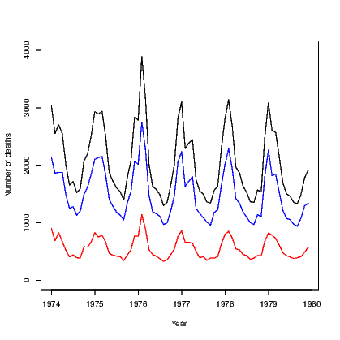

Exhibit 16.1: Map of New Zealand with a rectangle marked on it that bounds
the area used in a subsequent map.
This chapter explains how to create simple maps using some add-on packages. You will need to have installed the maps, mapdata, and ggmap packages to complete the examples in this chapter. If you have not installed an add-on package before, you should take a look at Chapter 14 first.
After installing the packages, load them into your R session using:
The creation of maps is actually a simple task in R, as long as the database for the desired land mass is available. There are a number of these data bases available as downloadable packages from CRAN.
I first created a map when I wanted a map of New Zealand (my home country) for a presentation I gave when I was overseas. I also wanted to show a portion of the country to highlight how far my home town is from the nation’s capital. The rectangle that appears on the map of New Zealand was created using the polygon() command. The box() command places the frame around the map which is created using the map() command. Exhibit 16.1 shows the first map, while Exhibit 16.2 shows the central part of the country.
The maps in these graphs are based on latitude and longitude data. The map() function ensures the aspect ratio of the resulting plot is in keeping with the actual view you would have from space if you were directly above the centre of the map being plotted. Note that this rule doesn’t apply for the world map options that exist.
The map.cities() function extracts data from a database of the world’s cities. Judicious selection of the criteria for population was required to get Palmerston North marked, and the capitals argument was used to get the point for Wellington. I have used some colours to distinguish the different cities for my plot.
One challenge in making this graphic presentable for this document was assuring myself that the aspect ratio was correct. Latitudes and longitudes do not take up equal space especially as you move further from the tropics. R will get the aspect ratio correct but being sure is another matter.
The graph I first created for this example was 5.7cm high and just over 10cm wide. Was it in proportion though? If each degree of latitude in the map used 1cm of space, we would expect each degree of longitude to take up at most 1 cm of space. An approximation for this is found by multiplying the latitude space by cos(θ) where θ is the latitude. So each degree of longitude in my plot should take up about 0.76 of the space of each degree of latitude. I’ve plotted three degrees of latitude and seven degrees of longitude, so I expect my 5.7cm high graphic to be

You can see the way we would do this calculation using R in Chapter 17.
The ability to search Google for specific locations is really useful, especially if you intend plotting maps with points of interest such as universities rather than just cities. Our first example does look for cities though, so that it builds on examples from previous sections in this chapter.
In mid-2015, I will attend the UseR conference in Aalborg, which is in Denmark. I know Denmark has a coastline and is bordered by Germany, but actually I don’t know much else (especially where individual cities are!). I want ot know where the city of Aalborg is in relation to Copenhagen (the capital of Denmark). Witht he help of the ggmap package tapping into Google maps, I can find the latitute and longitude for both cities and then plot them on the map of Denmark as follows:


{kind=link}
{kind=link}